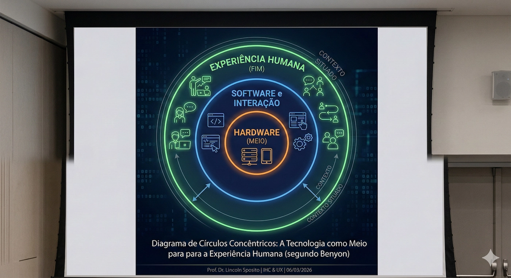
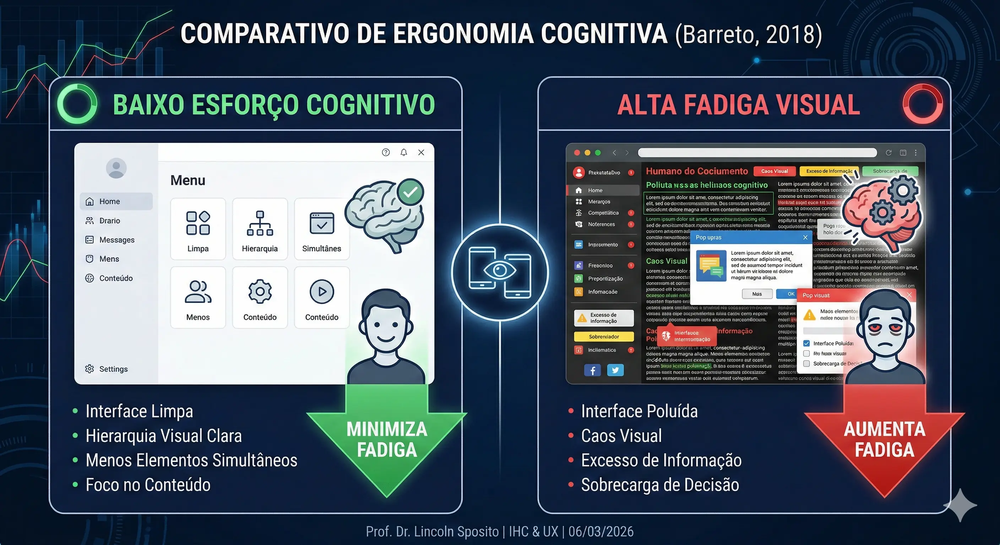
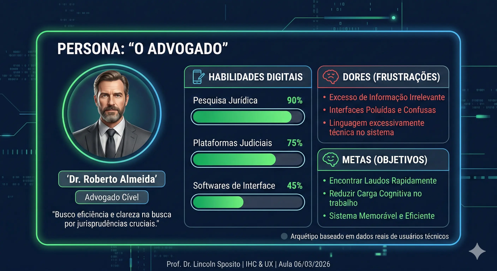

← Voltar ao Portal da Disciplina
Conheça meu trabalho como perito
← Voltar ao Portal da Disciplina
Conheça meu trabalho como perito
← Voltar ao Portal da Disciplina
Conheça meu trabalho como perito
← Voltar ao Portal da Disciplina
Conheça meu trabalho como peritoDisciplina: Interação Humano Computador e UX
Data: 06 de Março de 2026
Benyon (2011): "O design de interação trata de criar experiências que as pessoas considerem agradáveis, envolventes e úteis." (p. 5)
Barreto et al. (2018): "A interface humano-computador deve ser projetada de forma a facilitar a comunicação entre o usuário e o sistema computacional, minimizando o esforço cognitivo." (p. 24)
Valente (2020): "O projeto de interface não deve ser uma atividade tardia no processo de desenvolvimento de software, mas sim uma atividade central e iterativa." (p. 312)
Parecer: 100% dos respondentes associam a encontrabilidade ao sucesso da interface antes do clique. A visibilidade é o "aperto de mão" inicial que gera confiança.
Visibilidade estratégica: Se não é visto, não é usado. O sucesso começa na SERP.
Parecer: Embora os metadados estabeleçam autoridade pericial, a ausência de um CTA (chamada para ação) claro cria um "vácuo" no fluxo de conversão.
Parecer: A análise destaca que o agrupamento eficiente de informações (*chunking*) é a maior preocupação para evitar a paralisia de decisão. A organização em blocos reduz a carga cognitiva extrínseca e facilita a memória de trabalho.
"Quanto mais previsível e segmentada a arquitetura, maior a fluidez da interação e a eficácia do site."
Gabarito: Termos como "Laudo", "Perícia Judicial" e símbolos da Justiça.
Insight: A credibilidade não depende de estética tecnológica isolada, mas da aderência semântica ao repertório de advogados e juízes.
Parecer: A maioria confirma que os elementos de contato estão em áreas de alcance natural. Porém, 26,7% apontam fricções, sugerindo a revisão de alvos clicáveis para evitar o "erro motor".
Baseado em Barreto (2018): Interfaces móveis exigem esforço motor mínimo nas zonas de conforto do polegar.
Gabarito: Foco na Carga Cognitiva Extrínseca (H8 de Nielsen).
Insight: O excesso de badges no rodapé compete pela atenção. O parecer é priorizar a curadoria: manter apenas selos de alta relevância para evitar a sobrecarga sensorial.
Os usuários leigos avaliaram se a interface comunica "Autoridade Judicial" em menos de 1 minuto.
* Dados correlacionados com os termos "Profissional" (12 menções) e "Judicial" (11 menções) no Heatmap de coocorrência.
A percepção de usuários leigos é o fator que mais gera dados de impacto. O site precisa equilibrar a complexidade do tema com uma Satisfação e Eficácia imediata.
A confiança do cliente não vem da leitura técnica profunda, mas da coerência visual e da clareza da interface. Se o leigo confia, o sistema cumpriu sua Ergonomia Cognitiva.
Com base na análise das questões C4 a C31, a intervenção de maior impacto para converter visitantes em clientes é a consolidação de um fluxo de conversão claro e persistente. Apoiada por uma arquitetura enxuta (chunking) e leitura confortável (ergonomia física), a mudança exige a implementação de um CTA primário com hierarquia visual forte. Esta ação reduz a carga mental e garante que o contato seja a consequência natural da autoridade percebida.
Acesse o relatório completo da turma:
📥 Baixar PDF da Análise (27/02)Abaixo, registre sua percepção. O resultado aparecerá em tempo real no painel do Professor.
Professor: Acesse Relatórios > Tempo Real no GA4 e filtre pelo evento aprendizado_ergonomia para mostrar a contagem de respostas à turma.
Projetar ecossistemas de interação que resolvam problemas humanos e gerem valor de mercado.
"Vocês não estão aqui apenas para desenhar telas, mas para projetar experiências."
"O design de interação trata de criar experiências que as pessoas considerem agradáveis, envolventes e úteis."

Visualização: A Experiência Humana como o Fim da Cadeia.
Interfaces que facilitam a comunicação e minimizam o esforço cognitivo do usuário.
A interface como atividade central e iterativa do desenvolvimento de software.

Visualização: O Impacto do Design na Saúde Visual e Cognitiva do Usuário.
Arquétipos baseados em dados que humanizam o desenvolvimento.
Evita que o sistema seja projetado para o "usuário médio" inexistente.

IHC na Prática: Projetar para 'Roberto Almeida' evita o caos visual para o público jurídico.
IHC na Prática: Mapear dores e pontos de contato garante que o sistema converta a necessidade em venda.
Mapeamento dos pontos de contato entre o usuário e o sistema.
CONSCIÊNCIA → CONSIDERAÇÃO → DECISÃO
Uma jornada mapeada otimiza o SEO e garante a RETENÇÃO.
📌 Eficiente: Realizar a tarefa rápido.
📌 Eficaz: Sem erros no processo.
📌 Satisfatório: Sentir-se bem ao usar.
Ergonomia Cognitiva: Não sobrecarregue a memória do usuário.
Como Personas e Jornadas se convertem em lucro e autoridade?
Identificar o que o usuário busca em cada etapa da jornada para ser encontrado.
Reduzir a carga cognitiva para que o usuário permaneça e consuma o conteúdo.
Garantir que a jornada conduza o usuário à decisão (venda ou contratação).
"Se o conteúdo certo está no ponto de contato certo, a experiência flui para a venda."
Visualização: Como o Design Centrado no Usuário empurra a Persona do Tráfego ao Resultado de Negócio.
O mercado não aceita mais sistemas puramente funcionais; ele exige sistemas memoráveis.
Próxima Etapa: Converter estas teorias em Protótipos de Baixa Fidelidade no Laboratório.
Vamos validar se o design de um grande player que foca realmente no usuário ou apenas na estética.
Identificar como a Persona e sua Jornada ditam a eficiência do SEO, a taxa de RETENÇÃO e o sucesso da CONVERSÃO.
Instruções:
1. Escaneie o QR Code ao lado;
2. Responda às 5 questões de múltipla-escolha;
3. Elabore o seu Parecer Técnico final.
Excelente trabalho, peritos. Vemo-nos no laboratório!
UCD, Personas e Jornadas: Seu feedback é anônimo e alimenta nosso dashboard de satisfação em tempo real.
ID da Aula: 06/03 - UCD & Personas